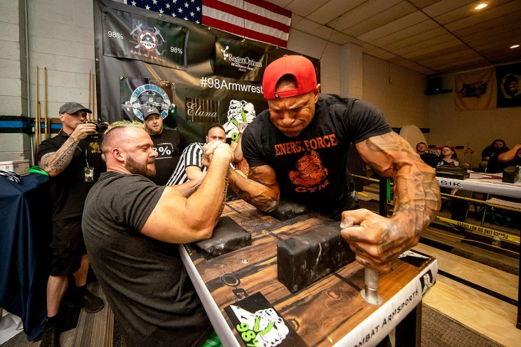

ArmWrestling Rules
Even a strong athlete who has been going to the gym for years can lose a fight.
You don't have to be a super athlete to beat everyone in armwrestling. An athlete can beat even the most pumped-up guy in armwrestling if he knows the right technique. The most important thing in this sport is a strong hand.

Here you will find all the necessary guidelines and rules to follow during arm wrestling matches.
Correct stance
Step 1: Grasp the pin with the non-working hand. Important: do not let go of the pin completely.
Step 2: The athlete's hands are positioned so that the grip is in the middle, with the phalanges of the fingers open. Important: the fingers of the opponent must not be covered.
Step 3. Athletes' shoulders should be parallel to the table.
Step 4. The elbow of the wrestling hand rests on the cushion on the table. Important: it is allowed to slide the elbow on the cushion, but it is not allowed to pull the elbow away from it.
Step 5: Get into a position that is comfortable for you. You can even rest your feet on the legs of the table on which you are fighting. Important: if your feet are in the way of your opponent, the referee will stop the game.